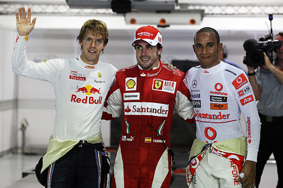

Five themes to watch for in the Singapore GP
AUTOSPORT's Formula 1 editor Edd Straw picks the five key storylines to watch out for going into the Singapore Grand Prix
By Edd Straw AUTOSPORT F1 editor

And then there were...some
If the top five on the grid take the chequered flag in the same order that they qualified in, the gap from P1 to P5 in the points will shrink to a mere 20 points – barely more than a driver is awarded for second place. The flip-side of this coin is that if one of the drivers currently in the lower reaches of what is right now a 24-point spread from first to fifth draws a blank, they will be relegated to the status of title long-shot.
Fernando Alonso, Jenson Button and Sebastian Vettel are well aware of how vital it is that they register good points in Singapore to avoid falling off the pace, but with points leader Mark Webber on the third row, there's every chance that this remarkable five-way fight will get even closer in the Singapore twilight.
Rubber brinkmanship
Running nigh-on the full distance on Option rubber, as Sebastian Vettel did in Monza, is not an option but with the top five likely to be running nose-to-tail in the early stages, the timing of the pitstops, expected to start at around lap 15, could decide the race. The option tyre is lasting well, but as soon as one of the top runners heads to pit-road it will encourage the rest to change tyres.
With the likes of Rubens Barrichello, Nico Rosberg and Robert Kubica capable of setting a decent pace, there is the potential to lose vital seconds in traffic, but once that group is cleared, it will be fascinating to see which of the big guns opts to stop first. Chances are it will be a test of nerve that could hit the losers' title hopes hard. Who will flinch first?
Weathering the storm
Track conditions will be key © Sutton
It's not going to need rain during the race for water to play a big part in the Singapore Grand Prix. It might not even require rain in the couple of hours during the lead-up to the start either. With humidity sky-high and the race taking place under floodlights, there is little to encourage the water to disperse, so it does so painfully slowly.
What's more, the drying process is desperately uneven, meaning that some corners stay damp or puddle-strewn far longer than others.
That could make conditions treacherous during the grand prix, with even Fernando Alonso admitting that pole position might not count for much if precipitation gets involved. He will do well to note how Daniil Kvyat, pole position starter in Saturday's Formula BMW Pacific race, was caught out while leading on the first lap in damp conditions.
Slings and arrows
The Singapore Sling chicane – better but more boringly known as Turn 10 – has grabbed more than its fair share of headlines this weekend thanks largely to Lewis Hamilton's comments in the build-up to the weekend. Hamilton himself has said that his thoughts were blown out of proportion, but there are legitimate concerns about the chicane. The kerbs are 15cm high, meaning that any driver getting off line could be in for a rough landing.
Adrian Sutil takes off © Sutton
Glock watching
Timo Glock targeted Singapore as one of the key races in the much-vaunted scrap for 10th in the Constructors' Championship. Given that the winner of the battle could be significantly advantaged financially a couple of years down the line, it's worth a lot more than new team pride as well.
Glock has been on inspired form all weekend at a track where he finished second last year, and even if the fight among the title contenders doesn't live up to the hype the battle at the back just might. Glock, team-mate Lucas di Grassi and Lotus driver Heikki Kovalainen were separated by less than four tenths in qualifying and with Jarno Trulli also in the mix, this could be a great sub-plot. Remember, backmarkers go racing too!